Weights & measurements
Record your weights and goal, follow your graph, and keep body measurements together with the notes that give them meaning.
YOUR PROGRESS. YOUR PACE.
A gentle place to see your progress over time.
Bring your weights, measurements, medical records and milestones together. Make room for the little changes, the big moments, and everything in between.
Discover Waist TimeCurrently in private testing.

A PLACE FOR YOUR JOURNEY
See your entries over time, keep your notes close, and recognize what you’ve accomplished.
Record your weights and goal, follow your graph, and keep body measurements together with the notes that give them meaning.
Keep medication details, doses and history alongside your doctor appointments. Appointments have their own home on the Medical page.
Celebrate milestones you’ve reached and keep track of the things you’re looking forward to.
Find your weights, measurements, doses and milestones in a timeline. Your own entries tell the story.
They used to be goals. Now they’re…
There’s room to celebrate the progress that matters to you.
KNOW WHERE YOUR RECORDS LIVE
Sign in with the same email address on your devices to connect them to one Waist Time account and synchronize your entries, notes and goal.
Photos stay on the device where you add them. They do not sync through Waist Time. Keep original photos backed up outside the app, especially before replacing a device or removing the app.
Read the Privacy PolicyA FEW HELPFUL THINGS
During beta testing, Waist Time is available to invited testers. Please use the email address associated with your invitation. Account setup is arranged through Waist Time Support; this website does not offer public downloads or self-service sign-up.
Visit Support →No. Photos, thumbnails and their details stay on the device where you add them. Signing in on another device brings back entries that have synchronized, while your photo album stays on its own device.
Make sure your entries have synchronized, review any questions about two versions, and preserve your original photos and important photo notes separately. Deleting the app can remove local photos and changes that never reached the cloud.
Waist Time is a personal recordkeeping app. It does not diagnose conditions or replace advice from your healthcare professional. Follow your prescriber’s instructions for medication.
A little progress. A little perspective.